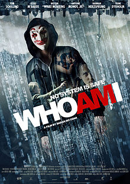

A BEAUTIFUL MIND
A Beautiful Mind is a 2001 American biographical drama film based on the life of John Nash, a Nobel Laureate in Economics. The film was directed by Ron Howard, from a screenplay written by Akiva Goldsman. It was inspired by a bestselling, Pulitzer Prize-nominated 1998 book of the same name by Sylvia Nasar. The film stars Russell Crowe, along with Ed Harris, Jennifer Connelly, Paul Bettany, Adam Goldberg, Judd Hirsch, Josh Lucas, Anthony Rapp, and Christopher Plummer in supporting roles. The story begins in Nash's days as a graduate student at Princeton University. Early in the film, Nash begins to develop paranoid schizophrenia and endures delusional episodes while watching the burden his condition brings on wife Alicia and friends.
The film opened in the United States cinemas on December 21, 2001. It went on to gross over $313 million worldwide and won four Academy Awards, for Best Picture, Best Director, Best Adapted Screenplay and Best Supporting Actress. It was also nominated for Best Actor, Best Film Editing, Best Makeup and Best Original Score. |
 |
THE THEORY OF EVERYTHING
The Theory of Everything is a 2014 biographical romantic drama film which is set at Cambridge University and details the life of the theoretical physicist Stephen Hawking. It was directed by James Marsh and adapted by Anthony McCarten from the memoir Travelling to Infinity: My Life with Stephen by Jane Hawking, which deals with her relationship with her ex-husband, theoretical physicist Stephen Hawking, his diagnosis of amyotrophic lateral sclerosis (ALS, also known as Lou Gehrig's disease or motor neurone disease), and his success in physics.
The film stars Eddie Redmayne and Felicity Jones, with Charlie Cox, Emily Watson, Simon McBurney, Christian McKay, Harry Lloyd, and David Thewlis featured in supporting roles. The film had its world premiere at the 2014 Toronto International Film Festival on 7 September 2014. It had its UK premiere on 1 January 2015.
|
 |
WHO AM I
Who Am I (German: Who Am I – Kein System ist sicher; English: "Who Am I: No System Is Safe") is a 2014 German techno-thriller film directed by Baran bo Odar. It is centered on a computer hacker group in Berlin geared towards global fame.It was screened in the Contemporary World Cinema section at the 2014 Toronto International Film Festival. The film was shot in Berlin and Rostock. Because of its storyline and some elements, the film is often compared to Fight Club and Mr. Robot
The film premiered in the Contemporary World Cinema section at the 2014 Toronto International Film Festival.
The film was screened at the 17th European Union Film Festival.
The film won three German Movie Awards and the Bambi for best German film.
|
 |
CAPTAIN AMERICA: THE FIRST AVENGER
Captain America: The First Avenger is a 2011 American superhero film based on the Marvel Comics character Captain America, produced by Marvel Studios and distributed by Paramount Pictures.It is the fifth film in the Marvel Cinematic Universe (MCU). The film was directed by Joe Johnston, written by the writing team of Christopher Markus and Stephen McFeely, and stars Chris Evans as Steve Rogers / Captain America, alongside Tommy Lee Jones, Hugo Weaving, Hayley Atwell, Sebastian Stan, Dominic Cooper, Neal McDonough, Derek Luke, and Stanley Tucci. Set predominantly during World War II, Captain America: The First Avenger tells the story of Steve Rogers, a sickly man from Brooklyn who is transformed into super-soldier Captain America and must stop the Red Skull, who intends to use an artifact called the "Tesseract" as an energy-source for world domination.
Captain America: The First Avenger premiered in Hollywood on July 19, 2011, and was released in the United States on July 22, 2011. The film was commercially successful, grossing over $370 million worldwide. Critics particularly praised Evans' performance, the film's depiction of its 1940s time period and Johnston's direction, though some felt that the film only served to set up the forthcoming Avengers film. A sequel titled Captain America: The Winter Soldier was released on April 4, 2014, and a third film titled Captain America: Civil War was released on May 6, 2016.
|
 |